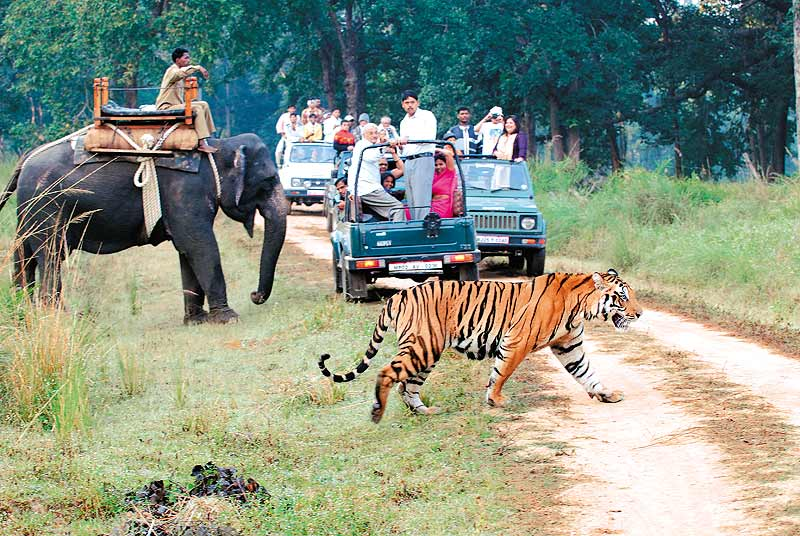

Trade
This section is an excerpt from Wildlife trade. Assorted seashells, coral, shark jaws and dried blowfish on sale in Greece Framed butterflies, moths, beetles, bats, Emperor scorpions and tarantula spiders on sale in Rhodes, Greece Wildlife trade refers to the products that are derived from non-domesticated animals or plants usually extracted from their natural environment or raised under controlled conditions. It can involve the trade of living or dead individuals, tissues such as skins, bones or meat, or other products. Legal wildlife trade is regulated by the United Nations' Convention on International Trade in Endangered Species of Wild Fauna and Flora (CITES), which currently has 184 member countries called Parties.Illegal wildlife trade is widespread and constitutes one of the major illegal economic activities, comparable to the traffic of drugs and weapons. Wildlife trade is a serious conservation problem, has a negative effect on the viability of many wildlife populations and is one of the major threats to the survival of vertebrate species. The illegal wildlife trade has been linked to the emergence and spread of new infectious diseases in humans, including emergent viruses.[9][10] Global initiative like the United Nations Sustainable Development Goal 15 have a target to end the illegal supply of wildlife.For food
A ground pangolin A ground pangolin Stone Age people and hunter-gatherers relied on wildlife, both plants and animals, for their food. In fact, some species may have been hunted to extinction by early human hunters. Today, hunting, fishing, and gathering wildlife is still a significant food source in some parts of the world. In other areas, hunting and non-commercial fishing are mainly seen as a sport or recreation. Meat sourced from wildlife that is not traditionally regarded as game is known as bushmeat. The increasing demand for wildlife as a source of traditional food in East Asia is decimating populations of sharks, primates, pangolins and other animals, which they believe have aphrodisiac properties. Malaysia is home to a vast array of amazing wildlife. However, illegal hunting and trade poses a threat to Malaysia's natural diversity — Chris S. Shepherd A November 2008 report from biologist and author Sally Kneidel, PhD, documented numerous wildlife species for sale in informal markets along the Amazon River, including wild-caught marmosets sold for as little as $1.60 (5 Peruvian soles).[self-published source?] Many Amazon species, including peccaries, agoutis, turtles, turtle eggs, anacondas, armadillos are sold primarily as food.Media
A Douglas squirrel (Tamiasciurus douglasii) A Douglas squirrel (Tamiasciurus douglasii) See also: Nature documentary Wildlife has long been a common subject for educational television shows. National Geographic Society specials appeared on CBS since 1965, later moving to American Broadcasting Company and then Public Broadcasting Service. In 1963, NBC debuted Wild Kingdom, a popular program featuring zoologist Marlin Perkins as host. The BBC natural history unit in the United Kingdom was a similar pioneer, the first wildlife series LOOK presented by Sir Peter Scott, was a studio-based show, with filmed inserts. David Attenborough first made his appearance in this series, which was followed by the series Zoo Quest during which he and cameraman Charles Lagus went to many exotic places looking for and filming elusive wildlife—notably the Komodo dragon in Indonesia and lemurs in Madagascar.[14] Since 1984, the Discovery Channel and its spinoff Animal Planet in the US have dominated the market for shows about wildlife on cable television, while on Public Broadcasting Service the NATURE strand made by WNET-13 in New York and NOVA by WGBH in Boston are notable. Wildlife television is now a multimillion-dollar industry with specialist documentary film-makers in many countries including UK, US, New Zealand, Australia, Austria, Germany, Japan, and Canada.[citation needed] There are many magazines and websites which cover wildlife including National Wildlife Magazine, Birds & Blooms, Birding (magazine), wildlife.net and Ranger Rick for children.Religion
Many animal species have spiritual significance in different cultures around the world, and they and their products may be used as sacred objects in religious rituals. For example, eagles, hawks and their feathers have great cultural and spiritual value to Native Americans as religious objects. In Hinduism the cow is regarded as sacred.[15] Muslims conduct sacrifices on Eid al-Adha, to commemorate the sacrificial spirit of Ibrāhīm in Islam ( Arabic-Abraham) in love of God. Camels, sheep, goats may be offered as sacrifice during the three days of Eid. In Christianity the Bible has a variety of animal symbols, the Lamb is a famous title of Jesus. In the New Testament the Gospels Mark, Luke and John have animal symbols: "Mark is a lion, Luke is a bull and John is an eagle."Tourism

This section is an excerpt from Wildlife tourism.
Animals can be viewed in their native or similar environments, from vehicles or on foot. This elephant in Hwange National Park, Zimbabwe, was quite undisturbed by the people and vehicle.
Elephant safari after the One-horned Rhinoceros in Royal Chitwan National Park, Manali
Wildlife tourism is an element of many nations' travel industry centered around observation and interaction with local animal and plant life in their natural habitats. While it can include eco- and animal-friendly tourism, safari hunting and similar high-intervention activities also fall under the umbrella of wildlife tourism. Wildlife tourism, in its simplest sense, is interacting with wild animals in their natural habitat, either by actively (e.g. hunting/collection) or passively (e.g. watching/photography). Wildlife tourism is an important part of the tourism industries in many countries including many African and South American countries, Australia, India, Canada, Indonesia, Bangladesh, Malaysia, Sri Lanka and Maldives among many. It has experienced a dramatic and rapid growth in recent years worldwide and many elements are closely aligned to eco-tourism and sustainable tourism.
According to United Nations World Tourism Organization, with an annual growth about 3%, 7% of world tourism industry relates to wildlife tourism.[18] They also estimates that the growth is much higher in places like UNESCO World Heritage Sites.[18] Wildlife tourism currently employs 22 million people worldwide directly or indirectly, and contributes more than $ 120 billion to global GDP.[19] As a multimillion-dollar international industry, wildlife tourism is often characterized by the offering of customized tour packages and safaris to allow close access to wildlife.